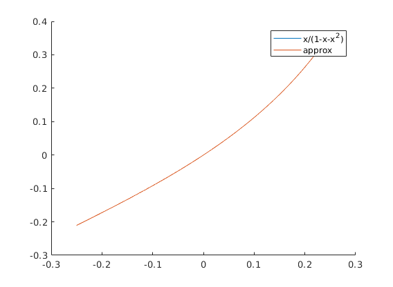
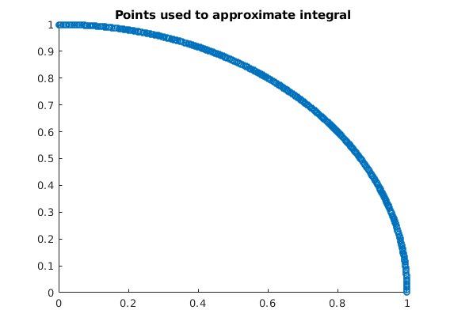

Zachary Kaplan
MATH 340-006 Assignment 2 2/1/18
Contents
Part 1
meters = 17; res = to_planck_len(meters); fprintf("%d meters in planck lengths: %e\n", meters, res); fprintf("The function used:\n"); dbtype to_planck_len; fprintf("\nError when called with negative value: "); err = "No Error"; try to_planck_len(-2); catch e err = e.message; end fprintf("%s\n", err);
17 meters in planck lengths: 1.051832e+36
The function used:
1 function pl = to_planck_len(meters)
2
3 if meters < 0
4 error('Cannot have a negative length');
5 end
6
7 h = 6.62607004e-34;
8 G = 6.67408e-11;
9 c = physconst('LightSpeed');
10
11 pl = sqrt(2 * pi * c^3 / (h * G)) * meters;
12 end
Error when called with negative value: Cannot have a negative length
Part 2
tol = 1e-5; res = ramanujan(tol); fprintf("Pi with at least tolerance %e is: %.17f\n", tol, res); fprintf("The function used:\n"); dbtype ramanujan; fprintf("\nError when called with a negative tolerance: "); err = "No Error"; try ramanujan(-1e-5); catch e err = e.message; end fprintf("%s\n", err);
Pi with at least tolerance 1.000000e-05 is: 3.14159273001330552
The function used:
1 function [approx_pi, n] = ramanujan(tol)
2 if tol < 0
3 error("Can't have a negative tolerance");
4 end
5
6 approx_1bypi = 0;
7 n = 0;
8
9 % Some precomputed values.
10 coef = 2*sqrt(2)/99^2;
11 while abs(pi - 1/approx_1bypi) > tol
12 approx_1bypi = approx_1bypi + coef*factorial(4*n)/factorial(n)^4 * ...
13 (26390*n + 1103)/396^(4*n);
14 n = n + 1;
15 end
16
17 approx_pi = 1/approx_1bypi;
18 end
Error when called with a negative tolerance: Can't have a negative tolerance
Part 3
tol = 1e-12; real = @(x) x ./ (1 - x - x.^2); approx = taylors_expand(real, 0, -1/4, 1/4, tol); X = -1/4:1e-4:1/4; figure hold on plot(X, real(X)); plot(X, approx(X)); legend('x/(1-x-x^2)', 'approx') fprintf("The function used to generate the approximation:\n"); dbtype taylors_expand;
The function used to generate the approximation: 1 function [approx, n] = taylors_expand(f, a, lo, hi, tol) 2 num_points = 1e6; 3 X = linspace(lo, hi, num_points); % Our support. 4 5 % Assume max of 100 terms. 6 coeffs = zeros(1, 100); 7 coeffs(end) = f(a); % First coeff. 8 n = 1; 9 10 % Storage for symbolic derivatives. 11 sym_f = sym(f); 12 % Storage for factorial 13 fact = 1; 14 15 while norm(abs(f(X) - polyval(coeffs, X - a)), inf) > tol 16 syms x df; 17 sym_df = diff(sym_f, x); 18 fact = fact * n; 19 x = a; 20 coeffs(end - n) = double(subs(sym_df)) / fact; 21 22 sym_f = sym_df; 23 n = n + 1; 24 end 25 26 approx = @(x) polyval(coeffs, x - a); 27 end
Extra Credit
% NOTE: Assuming rand has roughly uniform coverage of (0, 1), and that % equal ganularity across (0, 1) will converge fast enough. f = @(x) sqrt(1 - x.^2); real = int(sym(f), 0, 1); % Number of samples to approximate with. N = 1e8; X = rand(1, N); Y = f(X); figure scatter(X, Y); title('Points used to approximate integral'); estimate = sum(Y ./ N); % Integral estimate. fprintf(['Real Value : %f\n', ... 'Approx : %f\n', ... 'Error : %e\n'], ... real, estimate, abs(real - estimate));
Real Value : 0.785398 Approx : 0.785452 Error : 5.419107e-05